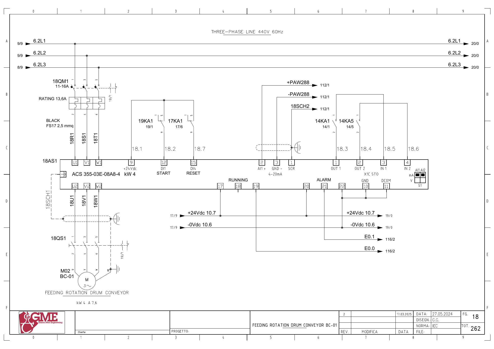
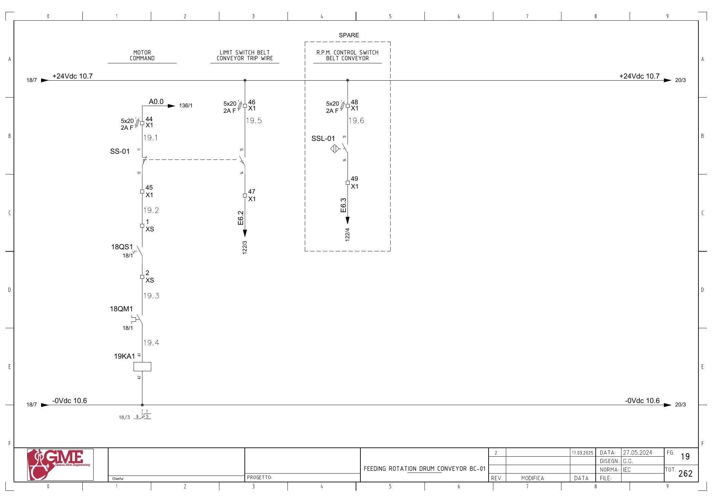

BC01 · 드럼 투입 컨베이어 전기 회로 추적
1. 도면의 구성과 진단 경계
FG18: 모터 M02 BC-01, 18AS1 ABB ACS355-03E-08A8-4(4kW), 18QM1·18QS1. 도면 정격은 현장 명판 확인 전 참고값입니다.
PLC 출력 1과 인버터 DI1의 실제 기동 입력은 다릅니다. SS-01·18QS1·18QM1의 직렬 접점과 19KA1을 거친 회로를 별도로 확인합니다.
추가 시공도면 · 접속함·케이블·배관 경로 — 승인·현재 설치는 확인 전입니다.
2. 기동 명령
A0.0 ↔ 백업 %Q0.0 / start bc01 · FG19 · PDF 20
- A0.0 (FG136/1 참조)
- X1:44 / 2A F(5×20)
- SS-01:11→12
- X1:45 → XS:1
- 18QS1 보조접점 → XS:2
- 18QM1 보조접점
- 19KA1 코일 A1→A2 / 0V
전달·사용 위치: FG18: +24V 단자9 → 19KA1 접점1→9 → 인버터 단자12(DI1 START).
원본 심볼 직접 참조: 1785 / allarms 1 / ORef 230 · 1935 / motors 1 / ORef 211
3. 운전 응답
E0.0 ↔ 백업 %I0.0 / bc01_fbk · FG18 · PDF 19
- +24Vdc 10.7 → 18AS1 단자17(RUNNING 공통)
- 18AS1 단자19 → E0.0
- FG116/2 PLC 입력 참조
전달·사용 위치: PLC 입력 → 내부 Inputs.BC01 run 전달 위치는 현재 복원 자료에서 확정하지 못했습니다. 알람 사용 위치는 원본1785입니다.
원본 심볼 직접 참조: 1018 / time work motor / ORef 1126
4. 인버터 이상
E0.1 ↔ 백업 %I0.1 / bc01_all_inv · FG18 · PDF 19
- +24Vdc 10.7 → 18AS1 단자20(ALARM 공통)
- 18AS1 단자21 → E0.1
- FG116/2 PLC 입력 참조
전달·사용 위치: 원본1785는 Inputs.BC01_All_inv를 읽어 Allarm.BC01_INV를 Set/Reset합니다. 물리 입력과 내부 신호의 전체 전달은 미확정입니다.
원본 심볼 직접 참조: 복원 LAD에서 이 이름의 직접 참조는 찾지 못했습니다. 내부 Inputs 등의 별도 전달·미해석 참조·현재 프로그램은 확인 전입니다.
5. 트립와이어 감시
E6.2 ↔ 백업 %I6.2 / bc01_tripwire · FG19 · PDF 20
- +24Vdc 10.7 → X1:46 / 2A F(5×20)
- SS-01:13→14
- X1:47 → E6.2
- FG122/3 PLC 입력 참조
전달·사용 위치: SS-01의 기동 회로 접점11/12와 감시 접점13/14는 점선으로 기계적 연결이 표시됩니다. 원본1786은 내부 trip wire 알람을 관리합니다.
원본 심볼 직접 참조: 복원 LAD에서 이 이름의 직접 참조는 찾지 못했습니다. 내부 Inputs 등의 별도 전달·미해석 참조·현재 프로그램은 확인 전입니다.
6. 회전 감시 예비
E6.3 ↔ 백업 %I6.3 / bc01_prox · FG19 · PDF 20
- +24Vdc 10.7 → X1:48 / 2A F(5×20)
- SSL-01:13→14
- X1:49 → E6.3
- FG122/4 PLC 입력 참조
전달·사용 위치: FG19의 점선 SPARE 영역에 있습니다. 트립와이어 E6.2와 별도 신호입니다.
원본 심볼 직접 참조: 복원 LAD에서 이 이름의 직접 참조는 찾지 못했습니다. 내부 Inputs 등의 별도 전달·미해석 참조·현재 프로그램은 확인 전입니다.
위 직접 참조는 복원 원본의 같은 심볼명 위치입니다. 읽기·쓰기 역할, 현재 호출, 현장 사용을 함께 확정한 표는 아닙니다. 원본의 simulation 블록 참조가 있더라도 이번 작업에서 가상 실행·개발·시험은 진행하지 않았습니다.
원본 PLC와 연결
남은 확인과 기록
- FG136/116/122 PLC 단자 모듈과 현장 배선의 끝점 대조
- BC01 물리 입력→Inputs DB의 전달 위치 및 반전 확인
- SS-01 두 접점의 정상·트립·복귀 상태와 설치 상태
- 18AS1 출력 접점 설정 및 현장 명판·파라미터
- 별도 속도 회로: FG18의 ±PAW288·AI1 단자2/3, FG112/1 참조 확인
도면을 함께 확인
FG 18 · 해당 도면 보기

FG 19 · 해당 도면 보기

| 기록 항목 | 내용 |
|---|---|
| 현장 식별 | 설비 ID / 반·단자대 / 모터·인버터 명판 / 도면 개정 |
| 신호 구간 | PLC 명령 / 단자 / 직렬 접점 / 릴레이 / DI / 응답 접점 / 입력 / 내부 DB |
| 관찰 결과 | 시각 / 운전 모드 / 기준값의 근거 / 관찰값 / 최초 불일치 구간 |
| 복구 확인 | 원인·조치 / 원인 해제 / Reset / 재요청 / 주변 설비 영향 |